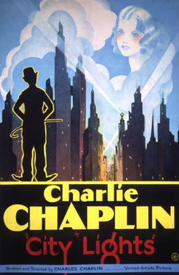
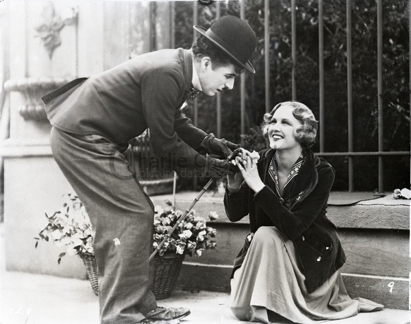
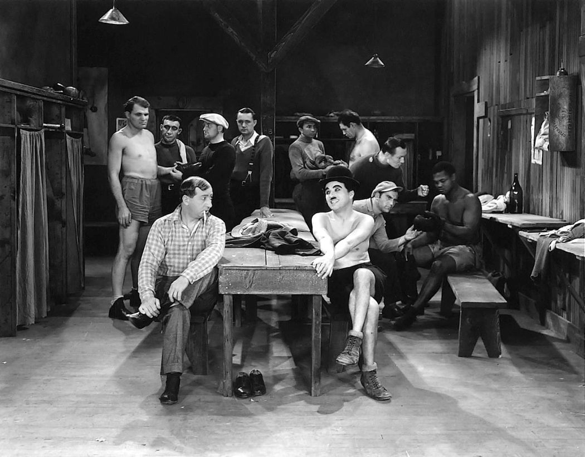
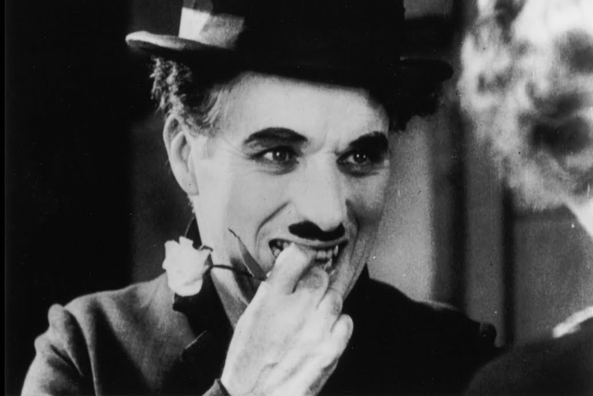

基本信息《城市之光》（英语：City Lights），上映于1931年1月，由查理・卓别林编剧和导演。本片讲述了流浪汉爱上了一位卖花盲女，还结交了一位反复无常的酗酒富翁的故事。 《城市之光》在1931年1月30日上映后立即取得了成功，获得了正面的评价和500万美元的票房。如今，很多影评人认为它不但是卓别林从影生涯的巅峰之作，还是史上最伟大的电影之一。1949年，影评人詹姆斯・艾吉将片中最后一个场景称为“有史以来最伟大的表演”。 |
 |
剧情简介城市里有一座雕像正要揭幕，揭开幕布时却发现流浪汉（卓别林 饰）睡在上面，于是官员们立即赶走了他。流浪汉非常穷困、无家可归，在离开的路上还被两个卖报童纠缠。他偶遇了一位美丽的卖花女，一开始没有意识到她是盲人，便买了一枝花。她找零钱时，旁边一个富人正好坐进一辆豪车开走了，发出的声响使卖花女以为是买花的人离开了。流浪汉见状悄悄踮着脚离开。图为查理和卖花女初次见面的情景。  当晚，流浪汉在水边碰见了一个试图自杀的百万富翁。流浪汉救了他，说服他应该活下去。他把流浪汉带回自己的宅邸，给他换了一身衣服。夜间，两人去城里寻乐，流浪汉无意间造成了好些混乱。 第二天清晨，在他们驾车回宅邸的路上，流浪汉看见正走去卖花的卖花女。他向富翁要了一些钱，找上卖花女后买了她所有的花，然后开着富翁的劳斯莱斯汽车送女孩回家。他离开后，卖花女向她的祖母讲述了她新结识的富人。当流浪汉回到宅邸时，富翁酒已经醒了，却不记得他了，让管家把他赶了出去。当日晚些时候，富翁再次喝醉，又碰见流浪汉，邀请他回家参加一个奢侈的派对。第二天早晨，清醒后的富翁准备渡海旅行，又不记得他了，再次把他扔了出去。 流浪汉回到卖花女的住处，从窗边窥探到医生在为女孩看病。他为了挣钱帮助她，找了一份扫街道的工作。同时，女孩的祖母收到通知，告知她如果她们在一天内不付清欠租就会被赶出去。祖母把通知单藏了起来。流浪汉在午休时间前来看望卖花女，看见报纸上关于一个维也纳医生能做复明手术的新闻。随后他发现了那张通知单，在女孩的要求下读给了她听。他向她保证自己会帮她付租金，但他回去后发现自己因迟到而被解雇了。 他走开时，一位拳击手劝他参加做假的比赛，然后两人可以平分50美元的奖金。然而就在比赛开始前，那人收到了一封电报，警告他警察就要来抓他了。他逃跑了，留下流浪汉和一位厉害的替补拳击手比赛。流浪汉英勇地参加了比赛，但最后还是被击倒了。 图为查理在拳击比赛前“热身”的场景。  之后，他碰见了刚从欧洲回来的喝醉的富翁。富翁把他带回宅邸，听闻女孩的困境后，给了流浪汉1000美元。此时，两个盗贼正躲在屋子里，听见他们谈及现金便跳出来抢了富翁剩下的钱。流浪汉打电话叫来了警察，但盗贼已经逃走，管家臆断是流浪汉偷了钱。富翁既不记得流浪汉，也不记得给了他钱的事。流浪汉勉强逃脱，把钱给了卖花女，告诉她自己会离开一段时间。后来，他在之前戏弄过他的报童面前被逮捕下狱。 几个月后，流浪汉出狱了。他到女孩原先卖花的街角去找她，但没有找到。卖花女用钱治好了眼睛后，和祖母开了一家花店，生意兴隆。当一位富有的青年男子来买花时，女孩怀疑他是不是自己神秘的帮助人。流浪汉在花店窗前的排水沟中捡起一枝花时，又遭到了报童的骚扰。他正要转身离开时，发现了隔着玻璃窗看着他的女孩。女孩看见他弄皱了捡起来的花，便好心地给了他一枝新的，还有一枚硬币。 当她握着他的手给他硬币时，意识到了熟悉的触感。她说：“是你？”他点头，问：“你现在可以看见了？”她哽咽地回答：“对，我现在可以看见了。”流浪汉害羞地向女孩微笑，影片就此结束。  |